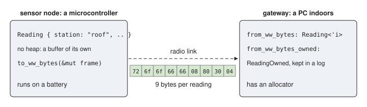

Your types on the wire¶
A program that sends a value over a radio link, a serial line or USB turns it into bytes, and the program at the other end turns the bytes back into a value. The rules for those bytes are a wire format. WireWeaver's wire format is ShrinkWrap: it packs values down to single bits, it works on a microcontroller without an allocator, and old and new versions of a type read each other's bytes. This chapter puts one struct on the wire with ShrinkWrap alone, without an API or any other part of WireWeaver.
The chapters of "Your data on the wire" use the sensor packet example. A weather station has a sensor node on its roof: a microcontroller that measures the temperature and the humidity, and sends each reading over a radio link to a gateway, a PC indoors. The node runs on a battery, and every byte it sends costs airtime and charge.

The example runs both ends in one program on your PC:
Adding ShrinkWrap to a crate¶
ShrinkWrap is the crate shrink_wrap. The example also uses ww_si, which gives numbers a unit, as the temperature
below shows. Here are the dependencies of examples/sensor_packet/Cargo.toml:
[dependencies]
shrink_wrap.workspace = true
ww_si = { workspace = true, features = ["thermal", "dimensionless", "mechanical"] }
workspace = true takes each dependency from the repository's workspace. In a crate of your own, name the
repositories instead: shrink_wrap = { git = "https://github.com/romixlab/shrink_wrap" } and
ww_si = { git = "https://github.com/vhrdtech/ww_base" }. Both crates are no_std, so the same dependencies serve
the node's firmware and the gateway's program.
Declaring a type¶
The #[derive_shrink_wrap] attribute on a struct generates the code that writes it to bytes and reads it back. Here
is the reading the node sends, from examples/sensor_packet/src/lib.rs:
/// One reading of a weather station, as its sensor node sends it over the radio.
#[derive_shrink_wrap(owned(feature = "std"), derive(Debug, PartialEq))]
pub struct Reading<'i> {
/// Where the station stands, such as "roof".
pub station: &'i str,
pub temperature: Temperature,
/// `None` when the humidity sensor did not answer.
pub humidity: Option<Humidity>,
pub battery_low: bool,
}
The attribute takes a list of directives. derive(Debug, PartialEq) adds the usual derives, and
owned(feature = "std") adds a second type for programs with an allocator. The next chapter,
Borrowed and owned, explains both.
Every field is a type ShrinkWrap knows. station is a string borrowed from the bytes it was read from, which is what
the lifetime 'i is for. humidity is an Option, because the humidity sensor sometimes doesn't answer.
battery_low is a bool. The temperature and the humidity are numbers that carry their unit in their type:
/// A temperature in steps of 0.01 °C: an `i16` on the wire.
pub type Temperature = Point<Celsius, Fixed<Kelvin, Centi, i16>>;
/// A relative humidity in percent, from 0 to 100: a `u8` on the wire.
pub type Humidity = Fixed<Ratio, Centi, u8, Range<0, 100>>;
A Temperature is an i16 on the wire that counts hundredths of a degree Celsius, and a Humidity is a u8 from 0
to 100 percent. The type costs nothing on the wire: the bytes are those of the plain number. The chapter
Numbers that know their unit explains how such types are built.
Writing a value¶
The node writes a reading into a buffer it owns and hands the bytes to its radio. to_ww_bytes does the writing:
/// Writes `reading` into `frame` as the node sends it: no allocator, the bytes stay in `frame`.
pub fn node_sends<'f>(
reading: &Reading<'_>,
frame: &'f mut [u8],
) -> Result<&'f [u8], ShrinkWrapError> {
reading.to_ww_bytes(frame)
}
to_ww_bytes returns the part of frame that holds the value. It allocates nothing, so it runs on a
microcontroller without a heap. When the buffer is too small, it returns an error instead of writing past the end.
The example sends 21.5 °C and 48 % from the roof, with the battery fine, and prints the bytes:
Where each bit goes¶
Nine bytes hold the whole reading. The layout below shows every bit of them, coloured by what it holds:
| bit | bits | field |
|---|---|---|
| 0 | 01110010 01101111 01101111 01100110 | station: "roof" |
| 32 | 01100110 00001000 | temperature: 2150, low byte first |
| 48 | 1 | humidity is Some |
| 49 | 0000000 | padding |
| 56 | 00110000 | humidity: 48 |
| 64 | 0 | battery_low: false |
| 65 | 000 | padding |
| 68 | 0100 | length of station: 4 |
Three rules explain the layout:
- A flag takes one bit.
battery_lowis one bit, and so is the flag that says whetherhumidityisSome. - Bytes start on a byte. A value of whole bytes, such as the
u8of the humidity, starts on a fresh byte. The bits skipped before it are padding, and they are always zero. - Lengths go to the back. The string's length, 4, is not in front of
"roof"but in the last nibble of the message. A nibble is four bits, and it holds a length up to 7.
Most formats write a length in front of its value, so they must know the size of a value before they write it. ShrinkWrap writes the value first and its length at the back of the buffer, so it writes in one pass and never moves bytes. A small length costs half a byte. The reader walks the values from the front and takes the lengths from the back.
There are no field names and no type tags in the bytes. The reader knows the type, so the bytes hold only the values.
Reading it back¶
The gateway reads the bytes with from_ww_bytes:
/// Reads a reading from a received frame without copying: `station` points into `frame`.
pub fn gateway_receives(frame: &[u8]) -> Result<Reading<'_>, ShrinkWrapError> {
Reading::from_ww_bytes(frame)
}
The reading it gets back is the one the node sent:
received: Reading { station: "roof", temperature: Celsius(21.5 °C, 2150 cK i16), humidity: Some(Ratio(48 % u8, 0..=100)), battery_low: false }
Reading copies nothing. The station of the result points into frame, which is why the result borrows it, and
why Reading has a lifetime. Borrowed and owned shows how to keep a reading after the
buffer is gone.
Bytes that are not a reading¶
A radio link loses bytes and flips bits. ShrinkWrap reads bytes from anywhere without trusting them: a buffer that can't hold a value of the type is an error, never a panic or a read past the end. The example damages its frame in two ways and reads each:
received 72 6f 6f 66 66 08 80 78 04: Err(SubtypeOutOfRange)
received 72 6f 6f 66 66 08 80 30: Ok(Reading { station: "", temperature: Celsius(285.3 °C, 28530 cK i16), humidity: None, battery_low: true })
The first frame has 120 (78) where the humidity was. Humidity only holds 0 to 100, so the read fails with
SubtypeOutOfRange before any code sees the value. The second frame lost its last byte, and it still reads, as
nonsense: the station is empty and the temperature is 285.3 °C. The missing byte held the string's length, so the
reader took the byte before it, and those bits happened to make a valid reading.
ShrinkWrap has no checksum, so it can't tell a damaged message from a different one. Media such as USB and CAN check every frame themselves. On a link without such a check, such as a serial line, WireWeaver's framer adds a checksum to each message. With ShrinkWrap alone, put a checksum around your messages, or use a radio whose frames have one.
Where to go next¶
- Borrowed and owned keeps a reading on the gateway after the frame's buffer takes the next one.
- Built-in types lists every type that can be a field, with its bytes.
[package]
name = "sensor_packet"
version = "0.1.0"
description = "A sensor node's radio packet on the wire with shrink_wrap alone: no API, no framework"
publish = false
edition.workspace = true
rust-version.workspace = true
authors.workspace = true
license.workspace = true
repository.workspace = true
# --8<-- [start:features]
[features]
default = ["std"]
# the owned types (String, Vec) for a host with an allocator
std = ["shrink_wrap/std", "ww_si/std"]
//! A weather station's sensor node and its gateway, talking over a radio link with `shrink_wrap` alone: no API
//! trait and no framework. The book's chapters "Your data on the wire" use it.
//!
//! The node is a microcontroller without an allocator: it writes a [Reading] into a buffer of its own and hands the
//! bytes to its radio. The gateway is a PC: it reads the bytes back and keeps the readings as [ReadingOwned].
#![cfg_attr(not(feature = "std"), no_std)]
#[cfg(feature = "std")]
pub mod radio;
pub mod v2;
use shrink_wrap::prelude::*;
use ww_si::origins::Celsius;
use ww_si::prefix::{Centi, Deca};
use ww_si::units::{Kelvin, Pascal, Ratio};
use ww_si::{Fixed, Point, Range};
ww_framer) that packs small messages into one packet and splits a large message over several.